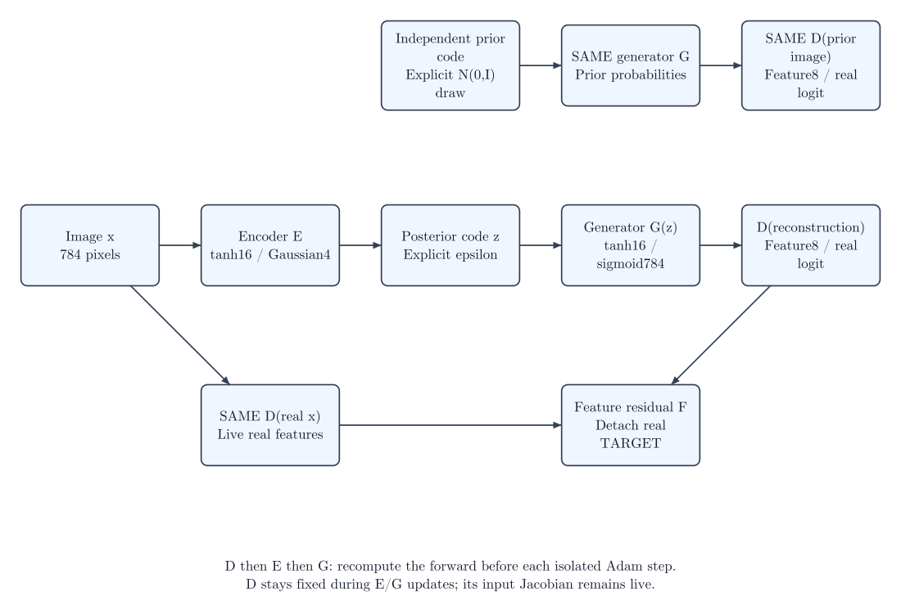
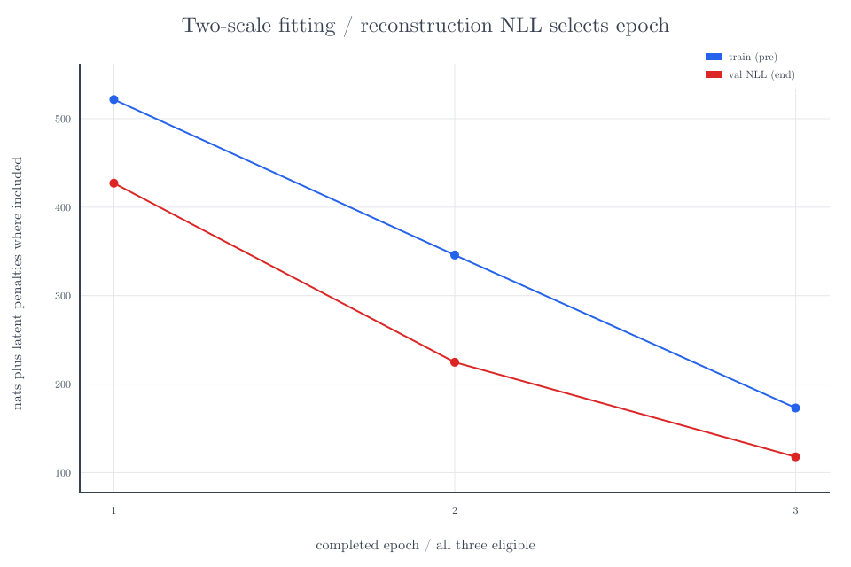
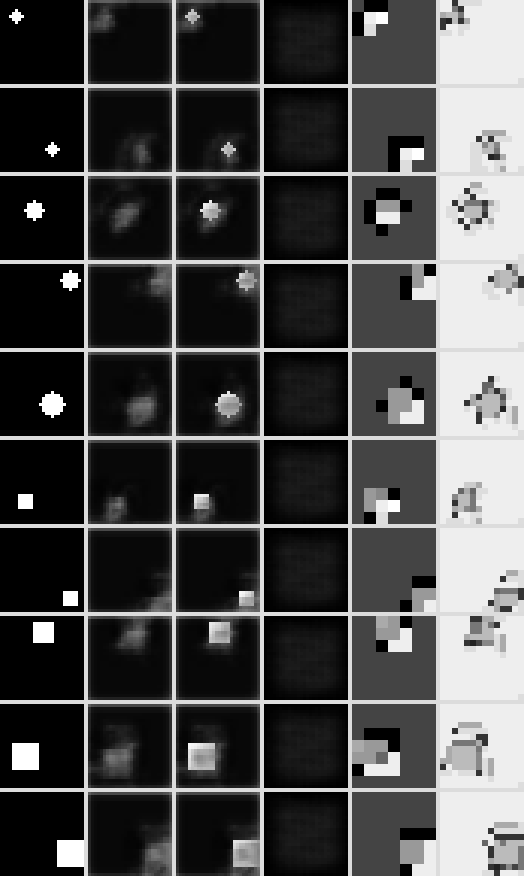
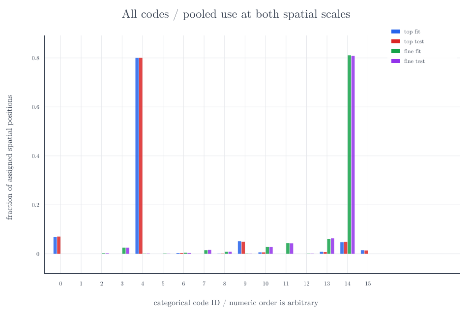
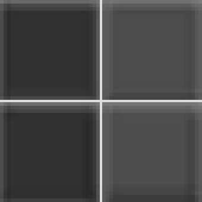
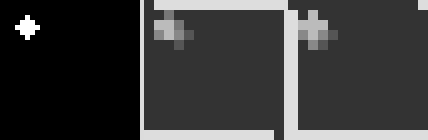
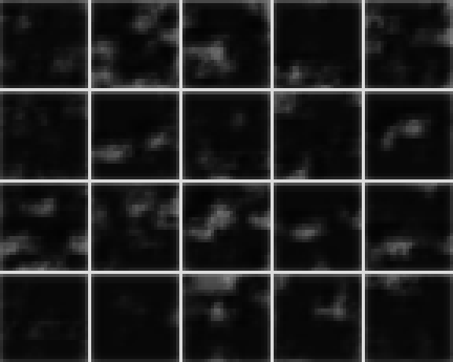

Two-Scale VQ-VAE: Coarse Conditioning and Discrete-Only Decoding
Abstract
One code lattice can force every image detail through the same spatial scale. A two-scale bottleneck lets coarse codes condition fine encoding while both discrete grids determine reconstruction. This report fits a compact hierarchical VQ model on 210 local binary shapes, with 42 validation and 42 test cases and all 21 Adam updates visible in C++. Epoch 3 wins validation reconstruction NLL. Test MSE 0.038228 improves on the fitting-only mean's 0.048548; 9/16 coarse and 13/16 fine codes occur in fitting data. Counterfactual code controls and unfiltered prior images distinguish mechanism checks from unsupported semantic/quality claims.
Coarse codes condition fine encoding; both grids enter decoding
[Razavi, van den Oord and Vinyals (2019)](https://arxiv.org/abs/1906.00446) organize vector-quantized latents hierarchically and fit code priors after learning the encoder/decoder. This small teaching variant has a 7×7 coarse lattice and a 14×14 fine lattice, each using its own 16×4 dictionary. Decoded coarse vectors condition the fine encoder and final decoder. All image-dependent information reaches decoding through quantized vectors; there is no continuous image-feature bypass to the decoder.
#include <dm/dm.hpp>
int main() {
std::filesystem::create_directories("build");
dm::graphics::Diagram d(51, 1100);
dm::graphics::DiagramNodeStyle st;
st.width = 5.6;
st.height = 2.8;
st.font_size = 19;
d.node("x", {0, 0}, "Binary image\n28 x 28 x 1", st)
.node("h", {7, 0}, "Conv3 to4 / ReLU / avg2\nFine feature14 x 14 x 4", st)
.node("e", {14, 0}, "Conv3 to4 / ReLU / avg2\nCoarse vectors7 x 7 x 4", st)
.node("q", {21, 0}, "Coarse quantization\nIndependent book16 x 4", st)
.node("t", {21, -6}, "Coarse-code feature\nRepeat2 / Conv3 to4 / ReLU", st)
.node("b", {7, -6}, "Concat fine + coarse\nLinear Conv1 to4", st)
.node("qb", {7, -12}, "Fine quantization\nIndependent book16 x 4", st)
.node("d", {28, -12}, "Concat BOTH code paths\nConv3 to8 / ReLU / repeat2", st)
.node("o", {35, -12}, "Linear Conv3 to1 / sigmoid\nBernoulli probabilities", st)
.edge("x", "h")
.edge("h", "e")
.edge("e", "q")
.edge("q", "t")
.edge("h", "b")
.edge("t", "b")
.edge("b", "qb")
.edge("qb", "d")
.edge("t", "d")
.edge("d", "o")
.text(
{19, -19},
"Reconstruction skips BOTH dictionaries in reverse mode.\nFine encoder losses reach the "
"coarse encoder through its surrogate.\nGeneration supplies two ID grids; no image or "
"continuous encoder feature enters.",
20)
.save_svg("build/vq2_vae_method.svg");
}
The dictionaries use nearest squared-distance assignment, with lowest-index ties. At each level q is the selected vector, and s=stop(q)+(e-stop(e)) preserves its forward value with an identity surrogate Jacobian to the encoder. Dictionary and commitment penalties detach opposite targets. For levels t and b, the fitted objective is
Both reconstruction-to-book derivatives stop. Fine losses can still reach the coarse encoder through its code-derived conditioning feature. The surrogate is not the derivative of hard argmin; analytic routing checks establish that path, while continuous decoder derivatives can be checked by finite differences away from ReLU kinks. There is no EMA dictionary update, reset, Gaussian KL or hidden optimizer. The paper uses EMA dictionaries and squared pixel loss; this migrated compact model uses gradient dictionary updates and Bernoulli NLL. It does not reproduce the paper's large residual networks or neural priors.
For general image area HW, dictionary width K, vector width D and final hidden width C, distance work is O(BHWKD), with O(BHWK) one-hot storage. Convolutions cost O(BHW×9(D²+DC+C)); the fine lattice contains four times as many vectors as the coarse one.
A conditional prior small enough to check by hand
A separately fitted fine-code prior uses only the aligned coarse parent and previous fine symbol. In the worked example, coarse codes [0,1] describe a 1×2 lattice and fine codes are [[0,0,1,1],[0,0,1,1]]. Each coarse symbol owns a 2×2 fine block, as the diagram shows. BOS=K resets at the start of each image, not each raster row. With half-count smoothing, parent0/BOS predicts code0 with probability 0.75; parent0/previous0 predicts it with 5/6.
#include <dm/dm.hpp>
int main() {
namespace n = dm::nn;
const auto top = n::from_vector(std::vector<int>{0, 1}, {1, 2}),
bottom = n::from_vector(std::vector<int>{0, 0, 1, 1, 0, 0, 1, 1}, {1, 8});
const n::models::Vq2ConditionalPrior prior(top, bottom, 1, 2, 2);
const auto p = prior.probabilities();
if (prior.counts().to_vector<int>() != std::vector<int>{2, 0, 1, 0, 1, 0, 0, 2, 0, 2, 0, 0})
return 1;
std::print("| parent code | previous fine | P(code0) | P(code1) |\n|---:|---|---:|---:|\n");
for (int parent = 0; parent < 2; ++parent)
for (int previous = 0; previous < 3; ++previous)
std::print(
"| {} | {} | {:.6f} | {:.6f} |\n",
parent,
previous == 2 ? "BOS" : std::to_string(previous),
p.at({parent, previous, 0}),
p.at({parent, previous, 1}));
std::print("Conditional NLL {:.9f} nats/grid.\n", prior.Nll(top, bottom));
if (!n::equal_bits(prior.Sample(top, n::full({1, 8}, .2, n::DType::Float64)), bottom))
return 1;
dm::graphics::Diagram d(40, 1100);
dm::graphics::DiagramNodeStyle a;
a.width = 3.5;
a.height = 2.2;
a.font_size = 20;
a.fill = dm::RGB{219, 234, 254};
auto b = a;
b.fill = dm::RGB{255, 237, 213};
d.node("t0", {2, 6}, "Coarse code0", a).node("t1", {10, 6}, "Coarse code1", b);
for (int row = 0; row < 2; ++row)
for (int col = 0; col < 4; ++col) {
const int parent = col / 2;
d.node(
"f" + std::to_string(row * 4 + col),
{col * 4., -row * 3.},
"Fine code" + std::to_string(parent) + "\nParent" + std::to_string(parent),
parent == 0 ? a : b);
}
d.text(
{6, -7},
"Fine raster order crosses the row boundary without resetting previous.\nBOS resets only at "
"the next image; aligned parent uses floor(row/2), floor(col/2).",
20)
.save_svg("build/vq2_vae_parent_alignment.svg");
}| parent code | previous fine | P(code0) | P(code1) |
|---|---|---|---|
| 0 | 0 | 0.833333 | 0.166667 |
| 0 | 1 | 0.750000 | 0.250000 |
| 0 | BOS | 0.750000 | 0.250000 |
| 1 | 0 | 0.166667 | 0.833333 |
| 1 | 1 | 0.166667 | 0.833333 |
| 1 | BOS | 0.500000 | 0.500000 |
Conditional NLL 1.669293486 nats/grid.

For vocabulary K=16, the actual fine prior stores 16×17×16 counts; previous=16 is BOS. Its conditional probability is (count+0.5)/(context_total+8). A separate coarse raster Markov prior uses previous coarse symbol/BOS. Both tables are fitted only to selected-model *fit* codes. They are cheap first-order baselines, not PixelCNN, and cannot enforce fitting-only provenance by themselves; the complete program chooses those inputs explicitly.
Native local data and the complete experiment
The native beta-vae-assets task prepares the same exhaustive circle/square lattice used by the related autoencoder reports: 294 binary 28×28 images, with 210 fit, 42 validation and 42 test factor combinations. Radius=size+2 and centre=(3x+5,3y+5); circles use inclusive Euclidean radius and squares inclusive Chebyshev radius. Residue (x+2y+size+3shape) mod 7 assigns test=0, validation=1 and fit=2–6. Source IDs and factors are provenance only. These small procedural teaching data are not a downloaded benchmark.
#include <dm/dm.hpp>
int main() {
namespace n = dm::nn;
const auto cache = dm::datasets::prepare_example_data("beta-vae-assets");
const auto a = n::load_npz((std::filesystem::path(cache) / "beta_vae/factors.npz").string());
auto find = [&](const std::string& name) {
for (const auto& [key, value] : a)
if (key == name)
return value;
throw std::runtime_error(name);
};
std::print("| pool | records | coarse/fine tokens per image |\n|---|---:|---|\n");
for (const std::string split : {"fit", "validation", "test"})
std::print("| {} | {} | 49 / 196 |\n", split, find(split + "_images").size(0));
}| pool | records | coarse/fine tokens per image |
|---|---|---|
| fit | 210 | 49 / 196 |
| validation | 42 | 49 / 196 |
| test | 42 | 49 / 196 |
Seed 2801 creates fourteen leaves and 1,157 scalars. Encoder1=40, encoder2=148, top book=64, top decoder=148, fine projection=36, fine book=64, decoder=584 and output=73. Leaf creation order follows that list. The two books are independent uniform(-0.5,0.5); ReLU kernels use He initialization, linear kernels ordinary Glorot and all biases zero. BatchOrder(210,32,2803) gives seven batches per epoch, including eighteen final rows. Three epochs make *21 Adam steps*, rate 0.003, moments 0.9/0.999 and epsilon 1e-8.
Every completed epoch 1–3 is eligible; validation reconstruction NLL alone selects the checkpoint, excluding the latent penalties. A fresh model restores all fourteen leaves. The program preserves all seventeen original saved forward fields, the first hierarchy probe, complete batch history and both explicit prior banks. Prior fitting occurs after selection. This is model restore, not optimizer-state resume. The actual forward, objective, reverse mode and Adam step remain visible inside the complete loop.
#include <dm/dm.hpp>
namespace nn = dm::nn;
namespace ae {
void Require(bool ok, const std::string& why) {
if (!ok)
throw std::runtime_error(why);
}
void Near(double a, double b, double tol, const std::string& why) {
Require(std::abs(a - b) <= tol, why);
}
nn::Tensor Find(const nn::NamedTensors& a, const std::string& name) {
for (const auto& [key, value] : a)
if (key == name)
return value;
throw std::runtime_error(name);
}
struct BetaFactorData {
nn::Tensor images, factors, source;
};
std::vector<BetaFactorData> LoadBetaFactors(const std::filesystem::path& root) {
const auto arrays = nn::load_npz((root / "factors.npz").string()),
known = nn::models::KnownFactorLattice();
std::vector<BetaFactorData> result;
std::set<int> seen;
for (const std::string split : {"fit", "validation", "test"}) {
const int n = split == "fit" ? 210 : 42;
const auto raw = Find(arrays, split + "_images"), f = Find(arrays, split + "_factors"),
ids = Find(arrays, split + "_source_ids");
Require(
raw.shape() == nn::Shape{n, 28, 28, 1} && f.shape() == nn::Shape{n, 4} &&
f.dtype() == nn::DType::Int32 && ids.shape() == nn::Shape{n} &&
ids.dtype() == nn::DType::Int32,
"complete lattice schema");
const auto canonical_ids = Find(known, split + "_source_ids").to_vector<int>();
std::vector<std::int64_t> rows;
for (int id : ids.to_vector<int>()) {
auto where = std::find(canonical_ids.begin(), canonical_ids.end(), id);
Require(
where != canonical_ids.end() && seen.insert(id).second,
"unique identity in correct split");
rows.push_back(where - canonical_ids.begin());
}
const auto x = nn::take_rows(Find(known, split + "_images"), rows);
Require(
nn::equal_bits(nn::cast(raw, nn::DType::Float32), x) &&
nn::equal_bits(f, nn::take_rows(Find(known, split + "_factors"), rows)),
"all factor coordinates and binary pixels match the core lattice");
result.push_back({x, f, ids});
}
Require(seen.size() == 294, "exhaustive lattice");
return result;
}
void SaveFactorData(const std::filesystem::path& root, const std::vector<BetaFactorData>& pools) {
nn::NamedTensors arrays;
for (int k = 0; k < 3; ++k) {
const std::string s = k == 0 ? "fit" : k == 1 ? "validation" : "test";
arrays.emplace_back(s + "_images", pools[k].images);
arrays.emplace_back(s + "_factors", pools[k].factors);
arrays.emplace_back(s + "_source_ids", pools[k].source);
}
nn::save_npz((root / "data.npz").string(), arrays);
}
nn::NamedTensors Arrays(const nn::ParameterStore& p) {
nn::NamedTensors a;
for (const auto& name : p.names())
a.emplace_back(name, p.at(name).detach().clone());
return a;
}
auto Snapshot(const nn::ParameterStore& p) {
return p.flatten();
}
double VqDifference(const nn::Tensor& a, const nn::Tensor& b) {
Require(a.shape() == b.shape(), "matching shapes");
return nn::max(nn::abs(a - b)).item();
}
double Mse(const nn::Tensor& a, const nn::Tensor& b) {
return nn::mean(
nn::square(
nn::cast(a.reshape({a.size(0), 784}), nn::DType::Float64) -
nn::cast(b.reshape({b.size(0), 784}), nn::DType::Float64)))
.item();
}
nn::Tensor PixelMean(const nn::Tensor& x) {
return nn::cast(
nn::mean(nn::cast(x.reshape({x.size(0), 784}), nn::DType::Float64), {0}), nn::DType::Float32);
}
nn::Tensor Constant(const nn::Tensor& row, int n) {
return nn::broadcast_to(row.reshape({1, 784}), {n, 784}).contiguous();
}
void Warm(nn::ParameterStore& p) {
nn::NoGradGuard guard;
nn::models::VectorQuantizedAutoencoder2(p, nn::zeros({1, 28, 28, 1}));
}
nn::NamedTensors Evaluate(nn::ParameterStore& p, const nn::Tensor& images) {
nn::NoGradGuard guard;
const auto n = nn::models::VectorQuantizedAutoencoder2(p, images);
nn::NamedTensors out{
{"encoded_top", n.encoded_top},
{"encoded_bottom", n.encoded_bottom},
{"top_indices", n.top.indices},
{"bottom_indices", n.bottom.indices},
{"top_quantized", n.top.quantized},
{"bottom_quantized", n.bottom.quantized},
{"top_straight_through", n.top.straight_through},
{"bottom_straight_through", n.bottom.straight_through},
{"top_feature", n.top_feature},
{"probability", n.probability},
{"nll", n.nll},
{"reconstruction_loss", n.reconstruction_loss},
{"top_codebook_loss", n.top.codebook_loss},
{"bottom_codebook_loss", n.bottom.codebook_loss},
{"top_commitment_loss", n.top.commitment_loss},
{"bottom_commitment_loss", n.bottom.commitment_loss},
{"loss", n.loss}};
for (auto& [name, t] : out) {
t = t.contiguous();
for (double v : t.to_vector<double>())
Require(std::isfinite(v), "all VQ2 endpoints finite");
}
return out;
}
nn::Tensor Decode(nn::ParameterStore& p, const nn::Tensor& top, const nn::Tensor& bottom) {
Require(
top.dim() == 2 && bottom.dim() == 2 && top.size(0) == bottom.size(0) && top.size(1) == 49 &&
bottom.size(1) == 196,
"paired coarse/fine grids");
nn::NoGradGuard guard;
auto feature = nn::models::Vq2TopDecoder(p, nn::models::VqLookup(top, p.at("top_codebook")));
return nn::sigmoid(
nn::models::Vq2Decoder(
p, nn::models::VqLookup(bottom, p.at("bottom_codebook")), feature))
.contiguous();
}
nn::NamedTensors HierarchyGradients(nn::ParameterStore& p, const nn::Tensor& images) {
const auto n = nn::models::VectorQuantizedAutoencoder2(p, images);
const auto coupling = nn::grad(
nn::mean(nn::square(n.encoded_bottom), {0, 1}), {n.encoded_top}, {true, false, false});
const auto probe =
n.reconstruction_loss + 0.0 * (nn::sum(n.top_book, {0, 1}) + nn::sum(n.bottom_book, {0, 1}));
const auto books = nn::grad(probe, {n.top_book, n.bottom_book});
return {
{"bottom_encoded_square_dtop_encoded", coupling[0]},
{"reconstruction_dtop_book", books[0]},
{"reconstruction_dbottom_book", books[1]}};
}
nn::NamedTensors
EncodeWithTop(nn::ParameterStore& p, const nn::Tensor& images, const nn::Tensor& top) {
nn::NoGradGuard guard;
const auto n = nn::models::VectorQuantizedAutoencoder2(p, images, top);
return {{"encoded_bottom", n.encoded_bottom.contiguous()}, {"bottom_indices", n.bottom.indices}};
}
nn::NamedTensors CheckGradients(
const nn::ParameterStore& p,
const std::vector<nn::Tensor>& g,
const std::string& finite,
const std::string& nonzero) {
Require(g.size() == p.size(), "all fourteen derivative leaves");
nn::NamedTensors out;
const auto names = p.names();
for (std::size_t k = 0; k < g.size(); ++k) {
double norm = 0;
for (double x : g[k].to_vector<double>()) {
Require(std::isfinite(x), finite);
norm += x * x;
}
Require(norm > 0, nonzero);
out.emplace_back(names[k], g[k]);
}
return out;
}
} // namespace ae
namespace check {
using ae::Near;
using ae::Require;
} // namespace check
namespace {
namespace nn = datamunge::nn;
float Scalar(const nn::NamedTensors& f, const std::string& key) {
return ae::Find(f, key).item<float>();
}
void Run(
const std::filesystem::path& data,
const std::filesystem::path& root,
int epochs,
const std::string& init) {
auto pools = ae::LoadBetaFactors(data);
std::filesystem::create_directories(root);
ae::SaveFactorData(root, pools);
nn::ParameterStore model(2801);
ae::Warm(model);
nn::OptimizerConfig config;
config.kind = nn::OptimizerKind::Adam;
nn::Optimizer optimizer(model, .003, config);
if (!init.empty())
model.load(init);
check::Require(model.count() == 1157 && model.size() == 14, "compact spatial VQ census");
nn::save_npz((root / "initial_arrays.npz").string(), ae::Arrays(model));
nn::BatchOrder order(210, 32, 2803);
std::ofstream history(root / "history.tsv"), batches(root / "batches.tsv");
history.precision(17);
history << "epoch\ttrain_preupdate_objective\tvalidation_nll\tvalidation_top_codebook_"
"loss\tvalidation_bottom_codebook_"
"loss\tvalidation_top_commitment_loss\tvalidation_bottom_commitment_loss\tvalidation_"
"objective\n";
batches << "epoch\tstep\trow\tsource_id\n";
const auto fit_source = pools[0].source.to_vector<int>();
const auto best_path = (root / "best.npz").string();
double best = std::numeric_limits<double>::infinity();
int selected = 0, step = 0;
const auto started = std::chrono::steady_clock::now();
for (int epoch = 1; epoch <= epochs; ++epoch) {
order.begin_epoch();
double sum = 0;
int seen = 0;
for (;;) {
auto rows = order.next();
if (rows.empty())
break;
auto images = nn::take_rows(pools[0].images, rows);
if (step == 0) {
nn::save_npz((root / "first_batch.npz").string(), {{"images", images}});
auto g = ae::CheckGradients(
model,
nn::grad(
nn::models::VectorQuantizedAutoencoder2(model, images).loss, model.parameters()),
"all VQ gradients finite",
"all fourteen tensors receive VQ2 gradients");
nn::save_npz((root / "first_gradients.npz").string(), g);
nn::save_npz((root / "first_forward.npz").string(), ae::Evaluate(model, images));
auto hierarchy = ae::HierarchyGradients(model, images);
double coupling_norm = 0;
for (float v : ae::Find(hierarchy, "bottom_encoded_square_dtop_encoded").to_vector<float>())
coupling_norm += std::abs(v);
check::Require(
coupling_norm > 0, "upper straight-through code has nonzero bottom-encoder derivative");
for (const std::string key : {"reconstruction_dtop_book", "reconstruction_dbottom_book"})
for (float v : ae::Find(hierarchy, key).to_vector<float>())
check::Near(v, 0, 0, "neither codebook receives reconstruction gradients");
nn::save_npz((root / "first_hierarchy_gradients.npz").string(), hierarchy);
}
const auto forward = nn::models::VectorQuantizedAutoencoder2(model, images);
const double preupdate = forward.loss.item<float>();
check::Require(std::isfinite(preupdate) && preupdate >= 0, "finite VQ2 objective");
sum += double(rows.size()) * preupdate;
const auto gradients = nn::grad(forward.loss, model.parameters());
optimizer.step(gradients);
seen += int(rows.size());
for (auto row : rows)
batches << epoch << '\t' << step << '\t' << row << '\t' << fit_source[row] << '\n';
if (step == 0)
nn::save_npz((root / "first_update_arrays.npz").string(), ae::Arrays(model));
++step;
}
check::Require(seen == 210, "all fitting cases exactly once per epoch");
auto validation = ae::Evaluate(model, pools[1].images);
const double nll = Scalar(validation, "reconstruction_loss");
history << epoch << '\t' << sum / seen << '\t' << nll;
for (const std::string key :
{"top_codebook_loss",
"bottom_codebook_loss",
"top_commitment_loss",
"bottom_commitment_loss",
"loss"})
history << '\t' << Scalar(validation, key);
history << '\n';
nn::save_npz(
(root / ("epoch" + std::to_string(epoch) + "_arrays.npz")).string(), ae::Arrays(model));
if (nll < best) {
best = nll;
selected = epoch;
model.save(best_path); // validation reconstruction NLL selects VQ checkpoint
}
std::cout << "epoch" << epoch << ":validation NLL=" << nll
<< ",top_dictionary=" << Scalar(validation, "top_codebook_loss")
<< ",bottom_dictionary=" << Scalar(validation, "bottom_codebook_loss") << std::endl;
}
const double seconds =
std::chrono::duration<double>(std::chrono::steady_clock::now() - started).count();
nn::ParameterStore deployed(2801);
ae::Warm(deployed);
deployed.load(best_path); // fresh VQ model-only restore
check::Near(
Scalar(ae::Evaluate(deployed, pools[1].images), "reconstruction_loss"),
best,
1e-8,
"restored selected NLL");
const auto before = ae::Snapshot(deployed);
nn::NamedTensors output;
std::vector<double> top_perplexity, bottom_perplexity;
for (int split = 0; split < 3; ++split) {
const std::string name = split == 0 ? "fit" : split == 1 ? "validation" : "test";
auto f = ae::Evaluate(deployed, pools[split].images);
for (const std::string level : {"top", "bottom"})
check::Require(
nn::equal_bits(
ae::Find(f, level + "_straight_through"), ae::Find(f, level + "_quantized")),
"both ST values bitexact code vectors");
const std::int64_t n = pools[split].images.size(0);
auto top = ae::Find(f, "top_indices").reshape({n, 49}).contiguous(),
bottom = ae::Find(f, "bottom_indices").reshape({n, 196}).contiguous();
check::Require(
nn::equal_bits(ae::Find(f, "probability"), ae::Decode(deployed, top, bottom)),
"both-grid code-only decode exactly matches reconstruction");
auto tu = nn::models::VqUsage(top), bu = nn::models::VqUsage(bottom);
top_perplexity.push_back(tu.perplexity);
bottom_perplexity.push_back(bu.perplexity);
output.emplace_back(name + "_top_code_counts", tu.counts);
output.emplace_back(name + "_bottom_code_counts", bu.counts);
output.emplace_back(name + "_top_index_grid", top);
output.emplace_back(name + "_bottom_index_grid", bottom);
for (const auto& [key, value] : f)
output.emplace_back(name + "_" + key, value);
}
const auto test_probability = ae::Find(output, "test_probability");
auto repeated = ae::Evaluate(deployed, pools[2].images);
check::Require(
nn::equal_bits(ae::Find(repeated, "probability"), test_probability),
"deterministic repeat bitexact");
auto single = ae::Evaluate(deployed, nn::take_rows(pools[2].images, {0}));
const double parity =
ae::VqDifference(ae::Find(single, "probability"), nn::take_rows(test_probability, {0}));
check::Require(parity < 2e-6, "VQ single/batch parity");
auto zero_top = nn::zeros({1, 49}, nn::DType::Int32),
one_top = nn::full({1, 49}, 1.0, nn::DType::Int32),
zero_bottom = nn::zeros({1, 196}, nn::DType::Int32),
one_bottom = nn::full({1, 196}, 1.0, nn::DType::Int32);
auto zero_decoded = ae::Decode(deployed, zero_top, zero_bottom);
const double top_effect =
ae::VqDifference(zero_decoded, ae::Decode(deployed, one_top, zero_bottom)),
bottom_effect =
ae::VqDifference(zero_decoded, ae::Decode(deployed, zero_top, one_bottom));
check::Require(
top_effect > 1e-5 && bottom_effect > 1e-5, "decoder responds to BOTH discrete groups");
auto probe_image = nn::take_rows(pools[2].images, {0});
auto c0 = ae::EncodeWithTop(deployed, probe_image, zero_top),
c1 = ae::EncodeWithTop(deployed, probe_image, one_top);
const double conditioning_effect =
ae::VqDifference(ae::Find(c0, "encoded_bottom"), ae::Find(c1, "encoded_bottom"));
check::Require(conditioning_effect > 1e-5, "bottom encoder changes with supplied top symbols");
nn::save_npz(
(root / "top_conditioning_intervention.npz").string(),
{{"images", probe_image},
{"zero_top_encoded_bottom", ae::Find(c0, "encoded_bottom")},
{"one_top_encoded_bottom", ae::Find(c1, "encoded_bottom")},
{"zero_top_bottom_indices", ae::Find(c0, "bottom_indices")},
{"one_top_bottom_indices", ae::Find(c1, "bottom_indices")}});
for (int bad : {-1, 16}) {
auto bad_top = nn::full({1, 49}, double(bad), nn::DType::Int32),
bad_bottom = nn::full({1, 196}, double(bad), nn::DType::Int32);
for (int which = 0; which < 2; ++which) {
bool rejected = false;
try {
ae::Decode(deployed, which ? zero_top : bad_top, which ? bad_bottom : zero_bottom);
} catch (const std::exception&) {
rejected = true;
}
check::Require(rejected, "invalid symbol rejected in either vocabulary");
}
}
const auto fit_top = ae::Find(output, "fit_top_index_grid"),
fit_bottom = ae::Find(output, "fit_bottom_index_grid"),
test_top = ae::Find(output, "test_top_index_grid"),
test_bottom = ae::Find(output, "test_bottom_index_grid");
nn::models::VqMarkovPrior top_prior(fit_top);
nn::models::Vq2ConditionalPrior bottom_prior(fit_top, fit_bottom);
const auto top_uniform = nn::models::MidpointUniformNoise({20, 49}, 2827);
const auto top_sample = top_prior.Sample(top_uniform);
const auto bottom_uniform = nn::models::MidpointUniformNoise({20, 196}, 2833);
const auto bottom_sample = bottom_prior.Sample(top_sample, bottom_uniform);
auto prior_probability = ae::Decode(deployed, top_sample, bottom_sample);
const double prior_top_fit = top_prior.Nll(fit_top), prior_top_test = top_prior.Nll(test_top),
prior_bottom_fit = bottom_prior.Nll(fit_top, fit_bottom),
prior_bottom_test = bottom_prior.Nll(test_top, test_bottom);
nn::save_npz(
(root / "prior.npz").string(),
{{"top_counts", top_prior.counts()},
{"top_probabilities", top_prior.probabilities()},
{"bottom_counts", bottom_prior.counts()},
{"bottom_probabilities", bottom_prior.probabilities()},
{"sample_top_ids", top_sample},
{"sample_bottom_ids", bottom_sample},
{"top_uniform", top_uniform},
{"bottom_uniform", bottom_uniform},
{"probability", prior_probability}});
check::Require(
before == ae::Snapshot(deployed),
"hierarchical prior/decoding/conditioning diagnostics preserve all parameters");
nn::save_npz((root / "model_arrays.npz").string(), ae::Arrays(deployed));
nn::save_npz((root / "outputs.npz").string(), output);
const double mse = ae::Mse(test_probability, pools[2].images);
auto mean = ae::Constant(ae::PixelMean(pools[0].images), 42);
const double mean_mse = ae::Mse(mean, pools[2].images);
const auto tc = ae::Find(output, "fit_top_code_counts").to_vector<int>(),
bc = ae::Find(output, "fit_bottom_code_counts").to_vector<int>();
int top_used = 0, bottom_used = 0;
for (int k = 0; k < 16; ++k) {
top_used += tc[k] > 0;
bottom_used += bc[k] > 0;
}
const double test_nll = Scalar(output, "test_reconstruction_loss");
std::ofstream meta(root / "metrics.json");
meta.precision(17);
meta << "{\"parameters\":1157,\"tensors\":14,\"epochs\":" << epochs << ",\"updates\":" << step
<< ",\"selected_epoch\":" << selected
<< ",\"vocabulary_each\":16,\"embedding_dimensions\":4,\"top_tokens\":49,\"bottom_tokens\":"
"196,\"commitment_"
"beta\":0.25,\"test_nll\":"
<< test_nll << ",\"test_objective\":" << Scalar(output, "test_loss")
<< ",\"test_mse\":" << mse << ",\"fit_mean_test_mse\":" << mean_mse
<< ",\"fit_top_used\":" << top_used << ",\"fit_bottom_used\":" << bottom_used
<< ",\"fit_top_perplexity\":" << top_perplexity[0]
<< ",\"fit_bottom_perplexity\":" << bottom_perplexity[0]
<< ",\"test_top_perplexity\":" << top_perplexity[2]
<< ",\"test_bottom_perplexity\":" << bottom_perplexity[2]
<< ",\"prior_top_fit_nll\":" << prior_top_fit << ",\"prior_top_test_nll\":" << prior_top_test
<< ",\"prior_bottom_fit_nll\":" << prior_bottom_fit
<< ",\"prior_bottom_test_nll\":" << prior_bottom_test
<< ",\"single_batch_max_error\":" << parity << ",\"top_symbol_max_effect\":" << top_effect
<< ",\"bottom_symbol_max_effect\":" << bottom_effect
<< ",\"top_conditioning_bottom_encoded_max_effect\":" << conditioning_effect
<< ",\"training_seconds\":" << seconds << "}\n";
check::Require(bool(meta) && bool(history) && bool(batches), "complete two-scale evidence");
std::print(
"| selected epoch | test NLL | test objective | test MSE | fit-only mean MSE | used "
"top/bottom | fit perplexity top/bottom | prior joint test nats/grid "
"|\n|---:|---:|---:|---:|---:|---|---|---:|\n| {} | {:.9f} | {:.9f} | {:.9f} | {:.9f} | "
"{}/{} | {:.9f}/{:.9f} | {:.9f} |\n",
selected,
test_nll,
Scalar(output, "test_loss"),
mse,
mean_mse,
top_used,
bottom_used,
top_perplexity[0],
bottom_perplexity[0],
prior_top_test + prior_bottom_test);
}
} // namespace
int main() {
try {
const std::filesystem::path cache = dm::datasets::data_home();
dm::datasets::prepare_example_data("beta-vae-assets", cache.string());
Run(cache / "beta_vae", "build/vq2_vae", 3, "");
return 0;
} catch (const std::exception& e) {
std::cerr << e.what() << '\n';
return 1;
}
}epoch1:validation NLL=427.081,top_dictionary=0.0425707,bottom_dictionary=0.0445253 epoch2:validation NLL=224.696,top_dictionary=0.0452619,bottom_dictionary=0.034649 epoch3:validation NLL=117.79,top_dictionary=0.0353752,bottom_dictionary=0.0295457
| selected epoch | test NLL | test objective | test MSE | fit-only mean MSE | used top/bottom | fit perplexity top/bottom | prior joint test nats/grid |
|---|---|---|---|---|---|---|---|
| 3 | 117.445175171 | 117.526412964 | 0.038227561 | 0.048548290 | 9/13 | 2.255974814/2.292422641 | 102.911545588 |
All fifteen archives/1,932,136 array values and complete TSV histories match the frozen original exactly. Only two summary MSE reductions use tensor Float64 accumulation instead of host summation, with roundoff below 3e-14; all other non-timing JSON values remain exact. The first-batch hierarchy probe verifies a nonzero fine-encoding derivative to the coarse encoder and exactly zero reconstruction derivatives to both dictionaries.
Keep validation and training observations distinct
Blue records the image-weighted pre-update training objective along each epoch's parameter path. Red uses the completed epoch's parameters and reconstruction NLL alone. Their gap therefore is not a direct overfitting estimate or a comparison of identical losses.
#include <dm/dm.hpp>
int main() {
std::ifstream input("build/vq2_vae/history.tsv");
std::string header;
std::getline(input, header);
std::vector<double> e, train, val;
double epoch, t, n, dt, db, ct, cb, l;
while (input >> epoch >> t >> n >> dt >> db >> ct >> cb >> l) {
e.push_back(epoch);
train.push_back(t);
val.push_back(n);
}
if (e.size() != 3)
return 1;
auto chart = dm::graphics::RPlot::create();
chart.lines(e, train, "train (pre)", dm::RGBA{37, 99, 235}, 2)
.points(e, train, "", dm::RGBA{37, 99, 235}, 5)
.lines(e, val, "val NLL (end)", dm::RGBA{220, 38, 38}, 2)
.points(e, val, "", dm::RGBA{220, 38, 38}, 5)
.title("Two-scale fitting / reconstruction NLL selects epoch")
.x_label("completed epoch / all three eligible")
.y_label("nats plus latent penalties where included")
.x_ticks({1, 2, 3}, {"1", "2", "3"})
.save_svg("build/vq2_vae_validation.svg");
}
Held-out reconstructions and empirical code usage
Each row below is original, reconstruction probability, absolute error, fitting-only mean, expanded 7×7 coarse ID grid and expanded 14×14 fine ID grid. Ten held-out rows are evenly spaced in source order without quality ranking. Image/error grayscale stays fixed at 0–1; IDs are divided by fifteen only for display. Code-ID brightness is not semantic ordering. Decoder outputs are probabilities, not sampled binary pixels.
#include <dm/dm.hpp>
int main() {
namespace n = dm::nn;
const auto data = n::load_npz("build/vq2_vae/data.npz"),
out = n::load_npz("build/vq2_vae/outputs.npz");
auto find = [](const n::NamedTensors& a, const std::string& name) {
for (const auto& [key, value] : a)
if (key == name)
return value;
throw std::runtime_error(name);
};
const auto x = find(data, "test_images").reshape({42, 784}), rec = find(out, "test_probability");
const auto mean = n::cast(
n::mean(n::cast(find(data, "fit_images").reshape({210, 784}), n::DType::Float64), {0}),
n::DType::Float32);
const auto top = n::upsample_nearest(
n::cast(
find(out, "test_top_index_grid").reshape({42, 7, 7, 1}),
n::DType::Float32) /
15.,
4)
.reshape({42, 784}),
bottom = n::upsample_nearest(
n::cast(
find(out, "test_bottom_index_grid").reshape({42, 14, 14, 1}),
n::DType::Float32) /
15.,
2)
.reshape({42, 784});
const std::vector<n::Tensor> columns{
x, rec, n::abs(x - rec), n::broadcast_to(mean.reshape({1, 784}), {42, 784}), top, bottom};
std::vector<n::Tensor> panels;
const auto ids = find(data, "test_source_ids").to_vector<int>();
std::print("Displayed source IDs:");
for (int k = 0; k < 10; ++k) {
const int row = k * 41 / 9;
std::print(" {}", ids[row]);
for (const auto& c : columns)
panels.push_back(n::take_rows(c, {row}));
}
std::print(".\n");
n::save_image_grid(
n::concat(panels, 0).reshape({60, 28, 28, 1}),
"build/vq2_vae_reconstructions.png",
6,
0,
1,
4,
220. / 255.,
3);
}Displayed source IDs: 0 33 65 91 130 159 195 217 256 292.

Fitting data use 9/16 coarse codes and 13/16 fine codes. Pooled perplexities are only 2.255975 and 2.292423; test values are 2.251207 and 2.302721. These exp(entropy) diagnostics measure pooled empirical code use, not prior likelihood, semantics or independent information per image. Concentration and unused codes remain visible; no reset or rejection is applied.
#include <dm/dm.hpp>
int main() {
namespace n = dm::nn;
const auto a = n::load_npz("build/vq2_vae/outputs.npz");
auto find = [&](const std::string& name) {
for (const auto& [key, value] : a)
if (key == name)
return value;
throw std::runtime_error(name);
};
const std::vector<std::string> names{
"fit_top_code_counts",
"test_top_code_counts",
"fit_bottom_code_counts",
"test_bottom_code_counts"},
labels{"top fit", "top test", "fine fit", "fine test"};
const std::vector<dm::RGBA> colours{{37, 99, 235}, {220, 38, 38}, {22, 163, 74}, {147, 51, 234}};
auto chart = dm::graphics::RPlot::create();
for (int series = 0; series < 4; ++series) {
const auto counts = find(names[series]).to_vector<int>();
std::vector<double> x, y;
const double total = (series % 2 == 0 ? 210. : 42.) * (series < 2 ? 49. : 196.);
for (int k = 0; k < 16; ++k) {
x.push_back(k - .27 + .18 * series);
y.push_back(counts[k] / total);
}
chart.bars(x, y, labels[series], colours[series], .16);
}
chart.title("All codes / pooled use at both spatial scales")
.x_label("categorical code ID / numeric order is arbitrary")
.y_label("fraction of assigned spatial positions")
.x_limits(-.8, 19.5)
.x_ticks(
{0, 1, 2, 3, 4, 5, 6, 7, 8, 9, 10, 11, 12, 13, 14, 15},
{"0", "1", "2", "3", "4", "5", "6", "7", "8", "9", "10", "11", "12", "13", "14", "15"})
.save_svg("build/vq2_vae_usage.svg");
}
Counterfactual codes check both decoder inputs
The next program restores only six decoder leaves and supplies both codebooks as saved lookup tensors. Rows fix coarse IDs to all-zero/all-one, columns fix fine IDs to all-zero/ all-one. These are deliberately extreme controls, not prior draws or quality-ranked images. The original maximum probability effects of changing coarse or fine IDs from zero are 0.056142464 and 0.164884523. A nonzero effect establishes dependence, not a semantic role.
#include <dm/dm.hpp>
int main() {
namespace n = dm::nn;
n::NoGradGuard guard;
const auto arrays = n::load_npz("build/vq2_vae/model_arrays.npz");
auto find = [&](const std::string& name) {
for (const auto& [key, value] : arrays)
if (key == name)
return value;
throw std::runtime_error(name);
};
n::ParameterStore p(2801);
auto warm = n::models::Vq2TopDecoder(p, n::zeros({49, 4}));
n::models::Vq2Decoder(p, n::zeros({196, 4}), warm);
if (p.size() != 6)
return 1;
for (const auto& name : p.names())
p.set(name, find(name));
std::vector<n::Tensor> images;
for (int top = 0; top < 2; ++top)
for (int bottom = 0; bottom < 2; ++bottom) {
const auto t = n::models::VqLookup(
n::full({1, 49}, top, n::DType::Int32), find("top_codebook")),
b = n::models::VqLookup(
n::full({1, 196}, bottom, n::DType::Int32), find("bottom_codebook"));
images.push_back(n::sigmoid(n::models::Vq2Decoder(p, b, n::models::Vq2TopDecoder(p, t))));
}
std::print(
"Maximum coarse effect {:.9f}; fine effect {:.9f}.\n",
n::max(n::abs(images[2] - images[0])).item(),
n::max(n::abs(images[1] - images[0])).item());
n::save_image_grid(
n::concat(images, 0).reshape({4, 28, 28, 1}),
"build/vq2_vae_code_controls.png",
2,
0,
1,
4,
220. / 255.,
6);
}Maximum coarse effect 0.056142464; fine effect 0.164884523.

Fine encoding itself also changes with a supplied coarse grid. The saved intervention uses one fixed held-out image with all-zero versus all-one top assignments. The maximum fine encoded-vector change is 0.122590229. The following program recomputes both interventions through the native override API and verifies the saved vectors/IDs before rendering.
#include <dm/dm.hpp>
int main() {
namespace n = dm::nn;
n::NoGradGuard guard;
const auto arrays = n::load_npz("build/vq2_vae/model_arrays.npz"),
saved = n::load_npz("build/vq2_vae/top_conditioning_intervention.npz");
auto find = [](const n::NamedTensors& a, const std::string& name) {
for (const auto& [key, value] : a)
if (key == name)
return value;
throw std::runtime_error(name);
};
n::ParameterStore p(2801);
n::models::VectorQuantizedAutoencoder2(p, n::zeros({1, 28, 28, 1}));
for (const auto& name : p.names())
p.set(name, find(arrays, name));
std::vector<n::Tensor> panels{find(saved, "images")};
for (int value = 0; value < 2; ++value) {
const auto o = n::models::VectorQuantizedAutoencoder2(
p, find(saved, "images"), n::full({1, 49}, value, n::DType::Int32));
const std::string prefix = value == 0 ? "zero" : "one";
if (!n::equal_bits(o.encoded_bottom, find(saved, prefix + "_top_encoded_bottom")) ||
!n::equal_bits(o.bottom.indices, find(saved, prefix + "_top_bottom_indices")))
return 1;
panels.push_back(
n::upsample_nearest(
n::cast(o.bottom.indices.reshape({1, 14, 14, 1}), n::DType::Float32) / 15., 2));
}
n::save_image_grid(
n::concat(panels, 0), "build/vq2_vae_top_conditioning.png", 3, 0, 1, 4, 220. / 255., 5);
}
Generate the coarse grid, then the conditional fine grid
After network selection, fit p(top) on fit coarse grids and p(fine|top) on paired fit grids. For generation, draw the forty-nine top symbols first using seed 2827, then the 196 fine symbols using seed 2833 and aligned parents. Both explicit banks use Float64 MT19937 midpoint uniforms. The following code fits only saved fitting codes, verifies all counts, probabilities, uniforms and sampled IDs, restores only decoder leaves, then checks every saved prior probability. No target, encoder or label enters generation; all twenty draws appear.
#include <dm/dm.hpp>
int main() {
namespace n = dm::nn;
n::NoGradGuard guard;
const auto arrays = n::load_npz("build/vq2_vae/model_arrays.npz"),
out = n::load_npz("build/vq2_vae/outputs.npz"),
saved = n::load_npz("build/vq2_vae/prior.npz");
auto find = [](const n::NamedTensors& a, const std::string& name) {
for (const auto& [key, value] : a)
if (key == name)
return value;
throw std::runtime_error(name);
};
const n::models::VqMarkovPrior top_prior(find(out, "fit_top_index_grid"));
const n::models::Vq2ConditionalPrior bottom_prior(
find(out, "fit_top_index_grid"), find(out, "fit_bottom_index_grid"));
const auto tu = n::models::MidpointUniformNoise({20, 49}, 2827),
bu = n::models::MidpointUniformNoise({20, 196}, 2833), top = top_prior.Sample(tu),
bottom = bottom_prior.Sample(top, bu);
for (const auto& [name, value] : n::NamedTensors{
{"top_counts", top_prior.counts()},
{"top_probabilities", top_prior.probabilities()},
{"bottom_counts", bottom_prior.counts()},
{"bottom_probabilities", bottom_prior.probabilities()},
{"top_uniform", tu},
{"bottom_uniform", bu},
{"sample_top_ids", top},
{"sample_bottom_ids", bottom}})
if (!n::equal_bits(value, find(saved, name)))
return 1;
n::ParameterStore p(2801);
auto warm = n::models::Vq2TopDecoder(p, n::zeros({49, 4}));
n::models::Vq2Decoder(p, n::zeros({196, 4}), warm);
for (const auto& name : p.names())
p.set(name, find(arrays, name));
if (p.size() != 6)
return 1;
const auto feature =
n::models::Vq2TopDecoder(p, n::models::VqLookup(top, find(arrays, "top_codebook")));
const auto probability = n::sigmoid(
n::models::Vq2Decoder(
p, n::models::VqLookup(bottom, find(arrays, "bottom_codebook")), feature));
if (!n::equal_bits(probability, find(saved, "probability")))
return 1;
n::save_image_grid(
probability.reshape({20, 28, 28, 1}), "build/vq2_vae_priors.png", 5, 0, 1, 4, 220. / 255., 4);
}
Test coarse prior NLL is 27.295038556 and conditional fine NLL 75.616507032, totalling 102.911545588 nats per paired grid. These are code-grid scores, not image log likelihoods. The raw fixed-width symbols need (49+196)×4=980 bits, excluding dictionaries, decoder, prior tables, framing and any entropy coder. This arithmetic does not establish a codec or compression advantage. A comparison with the smaller single-scale example would also change parameter count and code capacity; it is not a matched architectural experiment.
Evidence and limits
The native API owns both code-derived decoder stages, hierarchical inference and copied conditional prior state, reusing the canonical quantizer and coarse Markov prior. The caller owns updates, selection and explicit draws. The optional independent NumPy development check verifies all 1,157 first parameter derivatives, both reconstruction-to-book stops, 6,272 hierarchy derivatives, the exact first Adam step, all saved forwards, all three eligible validation criteria, complete batch order and both prior stages. It never fits or prepares data:
python3 scripts/check_vector_quantized_autoencoder_2.py docs/mepml/nn/2_autoencoders/2.2_variational_autoencoders/build/vq2_vaeThe tiny run demonstrates two-scale discrete dependence and a modest MSE improvement over a constant fitting mean. Neither that score, the code interventions nor pooled perplexity establish semantic coarse/fine separation, realistic generation or benchmark performance.